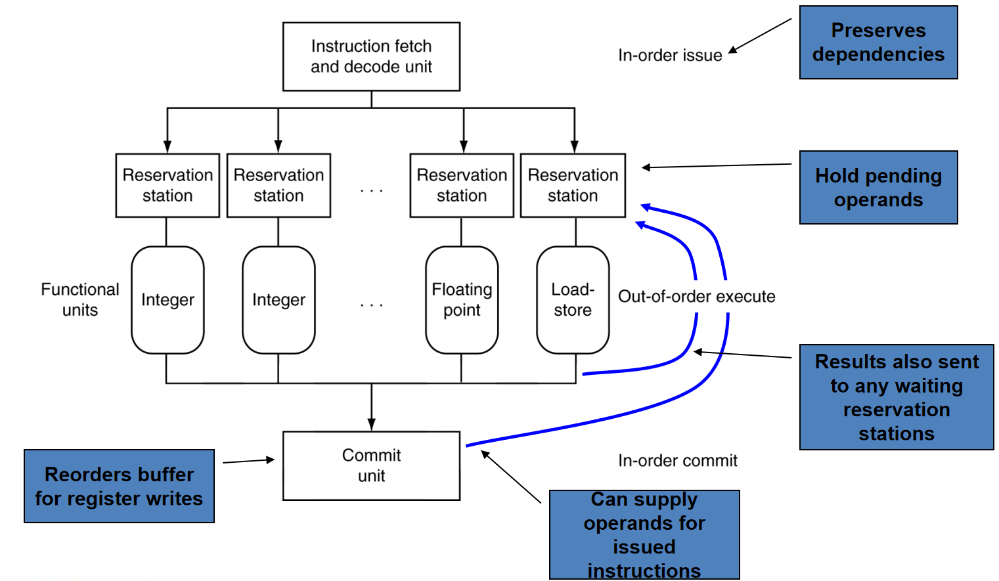
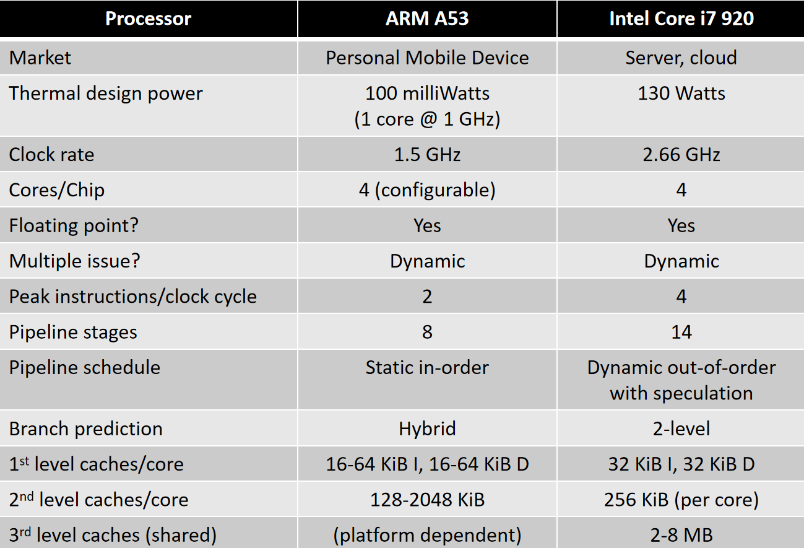
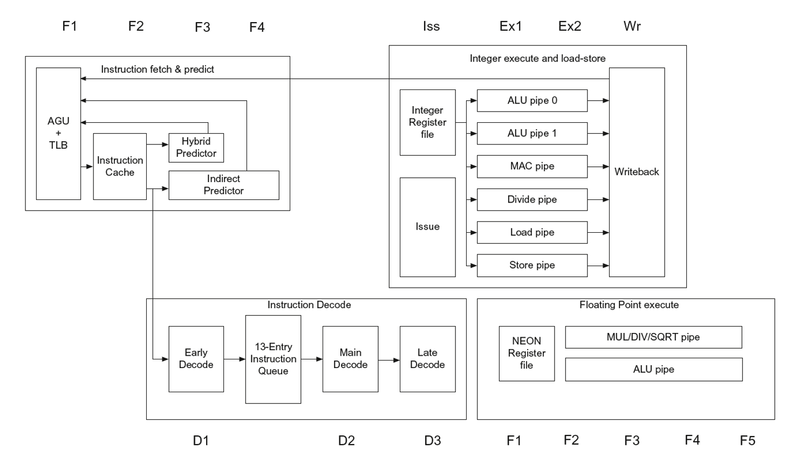
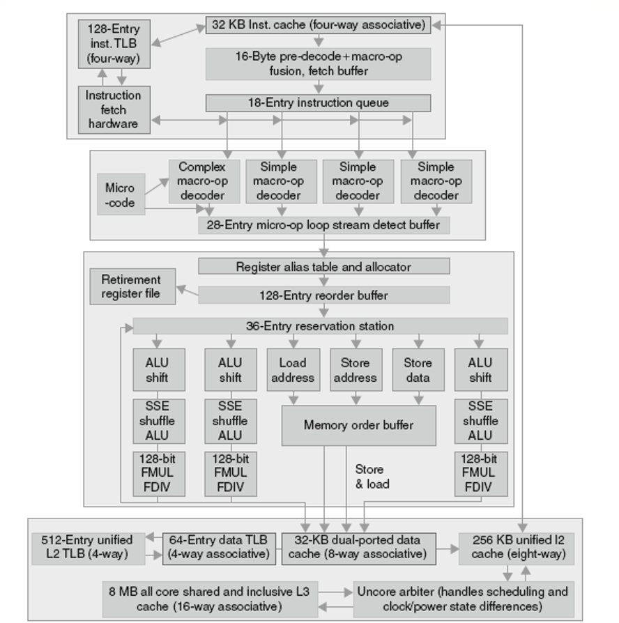

计算机组成4-3:RISC-V与流水线
我们将不再仅仅满足于“如何实现流水线”，而是要去探究一个更深层次的问题：为什么RISC-V这样的指令集天生就如此“适合”流水线化？而像x86这样的指令集，实现流水线却要困难得多？
这背后揭示了一个计算机体系结构中最核心的设计哲学：指令集体系结构（ISA）的设计与微架构（Microarchitecture，如流水线）的实现，并非独立，而是一场精心编排、互相成就的“双人舞”。 一个优雅的ISA能够让流水线的设计事半功倍，而一个高效的流水线实现则能最大化地发挥ISA的性能潜力。
第一部分：RISC-V的设计——为流水线而生
RISC（精简指令集计算机）的崛起，其背后最重要的驱动力之一，就是为了简化和高效实现流水线。RISC-V作为现代RISC ISA的典范，其设计的每一个角落都闪耀着对流水线友好的光芒。
1.1 特征一：所有指令等长（32位）
-
硬件实现上的巨大优势：
- 取指（IF）阶段极大简化：处理器无需知道当前指令是什么，就可以确定下一条指令的地址——永远是
PC+4。取指单元可以被设计成一个非常简单、高速的“傻瓜式”取货机器。 - 译码（ID）阶段可以提前进行：由于指令长度固定，指令中的关键字段（如
opcode,rs1,rs2,rd）总是在固定的位置。这意味着，我们可以在指令被完整取出的同一个周期内，并行地将rs1和rs2的地址送入寄存器堆进行读取。不需要先译码判断指令长度和格式，再回头找操作数字段。这使得IF和ID阶段可以干净利落地在一个时钟周期内完成，极大地帮助了流水线阶段的平衡。
- 取指（IF）阶段极大简化：处理器无需知道当前指令是什么，就可以确定下一条指令的地址——永远是
-
反例：CISC（如x86）的挑战：
- x86指令长度从1字节到17字节不等。
- 取指梦魇：处理器在没有完全译码当前指令之前，根本无法知道下一条指令从哪里开始。取指和译码过程高度耦合，难以拆分成独立的流水线阶段。
- 现代x86处理器的解决方案：它们在硬件内部，会将复杂、变长的x86指令，动态地翻译成定长、简单的、类似RISC的微操作（micro-ops）。然后，真正进入后端执行流水线的，是这些微操作。这相当于在硬件里内置了一个“编译器”，代价是极大的复杂度和功耗。
1.2 特征二：规整、少量的指令格式
-
硬件实现上的优势：
- RISC-V只有少数几种（R, I, S, B, U, J）高度规整的格式。
- 源寄存器（rs1, rs2）和目标寄存器（rd）的位置相对固定。观察RISC-V指令格式图，你会发现
rs1和rd总是在几乎相同的位置，rs2的位置也有限。 - 译码与寄存器读取并行化：这种规整性使得控制单元的译码逻辑和寄存器堆的读取操作可以并行进行。在ID阶段，硬件可以“推测性”地将
bits[19:15]和bits[24:20]直接送去读寄存器堆，同时控制单元根据opcode进行译码。无论最终是什么指令，这种“提前读取”的操作要么是有用的（如R-Type, S-Type, B-Type），要么是无害的（如J-Type，读出的值不用即可）。这大大缩短了ID阶段的关键路径。
-
反例：CISC的复杂性：
- 某些CISC指令集（如VAX）有几十种指令格式，操作数可能在内存，也可能在寄存器，寻址方式五花八门。
- 这使得译码成为一个多周期的、串行的复杂过程，极大地阻碍了流水线的流畅运行。
1.3 特征三：Load/Store架构
-
定义：只有
load和store指令可以访问内存。所有的计算指令（如add,sub）的操作数都必须来自寄存器，结果也必须写入寄存器。 -
对流水线的巨大贡献：
- 流水线阶段的清晰划分：这个设计哲学，天然地将指令执行过程分成了“计算”和“访存”两个互不干扰的阶段。这使得我们的五级流水线（IF-ID-EX-MEM-WB）划分变得异常自然和高效。
- ALU指令的生命周期是：IF -> ID -> EX -> (跳过MEM) -> WB。
- 访存指令的生命周期是：IF -> ID -> EX (计算地址) -> MEM (访问数据) -> WB (仅
ld)。
- 简化了EX阶段：EX阶段的任务变得非常单一：要么执行一次ALU计算，要么计算一个内存地址。不需要处理“操作数一半在寄存器一半在内存”的复杂情况。这有助于保持EX阶段的延迟相对稳定和可控。
- 简化了数据冒险的处理：由于计算和访存分离，数据冒险只发生在寄存器之间，处理逻辑（前递）相对统一和简单。
- 流水线阶段的清晰划分：这个设计哲学，天然地将指令执行过程分成了“计算”和“访存”两个互不干扰的阶段。这使得我们的五级流水线（IF-ID-EX-MEM-WB）划分变得异常自然和高效。
-
反例：CISC的内存操作数：
- x86允许这样的指令：
add eax, [memory_address]。 - 流水线阶段的混乱：这条指令既需要ALU计算，又需要访问内存，它同时染指了EX和MEM两个阶段的核心功能。这使得设计一个干净、平衡的流水线变得极其困难。你需要一个超长的阶段来处理它，或者设计更复杂的流水线来分解这种操作，无论哪种都增加了设计的复杂性。
- x86允许这样的指令：
小结：RISC-V的简洁优雅并非偶然，它是为了迎合高效流水线实现而精心设计的产物。汇编语言程序员（或编译器）所看到的简洁指令，直接映射到了硬件设计者所期望的简单、高速的逻辑通路。
第二部分：指令级并行（ILP）——榨干流水线的最后一滴性能
我们已经构建了每个周期理想情况下能完成一条指令（IPC=1）的流水线。但这还不是性能的终点。真正的性能野兽，追求的是IPC > 1。这就是**指令级并行（Instruction-Level Parallelism, ILP）**的范畴。其核心思想是：在一个时钟周期内，启动多条指令的执行。
2.1 如何实现ILP：两种哲学路径
有两种主流方法来挖掘和利用ILP：
-
更深的流水线（Super-pipelining）：
- 思想：将原有的5级流水线切分得更细。比如，将EX阶段切分为EX1, EX2；将IF阶段切分为IF1(取地址), IF2(访问I-Cache)。
- 优势：每个阶段的逻辑更少，关键路径更短，因此可以实现更高的时钟频率。奔腾4处理器曾经将流水线做到了惊人的31级，追求的就是极致的时钟频率。
- 劣势：
- 分支预测惩罚剧增：一次分支预测错误，需要冲刷掉的指令数量大大增加，性能损失惨重。
- 数据冒险延迟增加：数据前递可能需要跨越更多的阶段，导致某些情况下暂停无法避免。
- 流水线寄存器开销：更多的寄存器带来了额外的延迟和功耗。
-
多发射（Multiple Issue）：
- 思想：在一个时钟周期内，同时取指、译码、发射多条指令到不同的执行单元。这需要处理器在硬件层面进行“扩容”。
- 实现方式：
- 静态多发射（VLIW）：由编译器负责挖掘并行性。编译器将多条没有依赖关系的指令打包成一个“超长指令包（VLIW）”，硬件则简单地、机械地执行这个指令包中的所有操作。硬件设计简单，但极度依赖编译器的能力，且代码兼容性差。
- 动态多发射（超标量 Superscalar）：这是现代主流高性能处理器的选择。由硬件在运行时动态地检查指令流，寻找可以并行执行的指令，然后将它们发射到空闲的执行单元。
2.2 超标量处理器：硬件的智慧
超标量处理器是当今高性能计算的基石。它的核心是乱序执行（Out-of-Order Execution）。

乱序执行的核心思想：指令的执行顺序不必严格遵守程序中的顺序（即取指顺序），只要数据依赖关系得到满足即可。
经典例子：
ld x31, 20(x21) // 1. load, 可能需要很长时间 (cache miss)
add x1, x31, x2 // 2. add, 依赖于指令1
sub x23, x23, x3 // 3. sub, 与1,2无关
andi x5, x23, 20 // 4. andi, 依赖于指令3
- 顺序流水线（In-Order）：当指令1因为Cache Miss而卡在MEM阶段时，指令2因为等待
x31而暂停在ID阶段，整个流水线都被阻塞了。指令3和4明明可以先执行，却也只能傻等。 - 乱序执行（Out-of-Order）：硬件会发现指令3不依赖于指令1和2，并且其操作数
x23和x3都已就绪。于是，硬件会绕过被阻塞的指令2，提前执行指令3和4。
实现乱序执行的关键硬件部件：
- 保留站（Reservation Stations）：取代了简单的流水线寄存器。每条译码后的指令被送到一个保留站。保留站会监视所有执行单元的输出，等待其所需的操作数。一旦操作数就绪，指令就可以被发射到执行单元。
- 重排序缓冲（Reorder Buffer, ROB）：指令虽然是乱序执行的，但它们的执行结果**必须按程序顺序提交（Commit）**到寄存器堆和内存中，以保证程序的正确性（特别是为了精确异常）。ROB就是负责缓存乱序执行的结果，并按原始顺序进行提交的部件。
- 寄存器重命名（Register Renaming）：为了打破“假”的数据依赖（如写后写、写后读依赖），硬件会动态地将指令中的架构寄存器（如
x1,x2）映射到一组更大的物理寄存器。这使得原本因为寄存器名相同而不能并行的指令，可以被并行执行。
2.3 编译器与硬件的协同：指令调度与循环展开
即使在强大的超标量处理器中，编译器依然扮演着至关重要的角色。
- 指令调度（Instruction Scheduling）：编译器通过重新排列指令顺序，可以更好地向硬件暴露并行性，减少硬件在运行时动态寻找并行指令的压力。
- 循环展开（Loop Unrolling）：
- 思想：将循环体复制多次，并减少循环控制指令（如
addi,blt）的比例。 - 好处：
- 减少循环开销：分支指令是性能杀手，展开后分支次数减少。
- 暴露更多ILP：展开后的多个循环体之间，如果使用了不同的寄存器（通过寄存器重命名实现），就可能存在大量的并行性，可以被超标量处理器或VLIW编译器利用。
- 思想：将循环体复制多次，并减少循环控制指令（如
例子： 一个简单的循环，经过编译器精心调度后，在双发射处理器上，IPC可以从1提升到1.25。如果再进行循环展开，IPC可以进一步提升到1.75，逼近理论峰值2。这是编译器和硬件协同优化的完美体现。
第三部分：现实世界的处理器——Cortex-A53与Intel Core i7的对比
理论学习最终要回归到现实。让我们看看两款真实的、具有代表性的处理器，是如何应用我们今天所学的知识的。

-
ARM Cortex-A53 (典型的移动端、高能效核心)
- 设计哲学：追求能效比，控制复杂度。
- 流水线：相对较短（8级），静态顺序双发射（In-order）。这意味着它每个周期最多发射两条指令，但严格按照程序顺序执行。
- 权衡：放弃了乱序执行带来的极致性能，换取了更低的功耗和更小的芯片面积。编译器调度对其性能至关重要。
-
Intel Core i7 920 (典型的高性能桌面/服务器核心)
- 设计哲学：不惜一切代价追求单核性能。
- 流水线：非常深（14级），动态乱序多发射（Out-of-order），带推测执行。
- 权衡：通过极度复杂的硬件（乱序执行引擎、深度分支预测、推测执行等）来榨取ILP，带来了强大的性能，但也付出了巨大的功耗和芯片面积代价。
 
性能对比：
- A53的理想CPI很低，但更容易受到流水线暂停的影响。
- i7的CPI图中，“Stalls, misspeculation”占据了相当大的比例，这正是其复杂乱序和推测执行机制所付出的代价。但即使如此，其最终的有效CPI仍然非常低。
总结：
我们从ISA与流水线的协同设计出发，深入探讨了指令级并行的两大路径——超流水线与多发射，并解构了现代高性能处理器的核心——超标量乱序执行。
我们必须深刻理解：
- ISA是硬件的API：一个为流水线精心设计的ISA（如RISC-V），是构建高效处理器的基石。
- ILP是性能的源泉：通过流水线、多发射、乱序执行等技术，处理器实现了从串行到并行的飞跃。
- 复杂性是永恒的敌人：更高的性能往往伴随着指数级增长的硬件复杂度和功耗。Cortex-A53和Core i7的选择，完美地诠释了在不同设计目标（能效 vs. 性能）下的不同权衡。